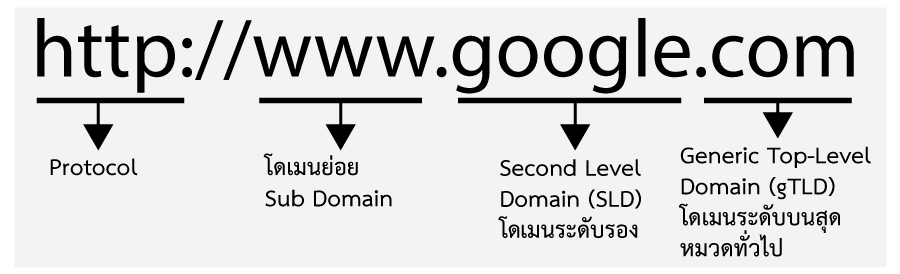
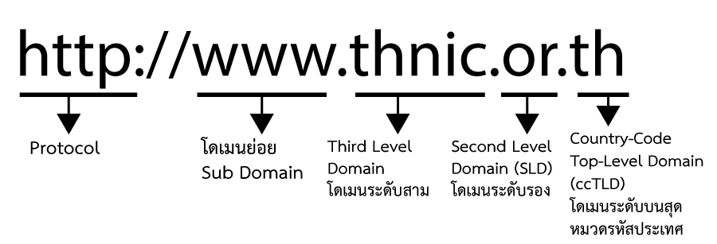

หน่วยที่ 9 ความรู้เบื้องต้นเกี่ยวกับอินเตอร์เน็ต


อินเทอร์เน็ต (อังกฤษ: Internet)
หมายถึง เครือข่ายคอมพิวเตอร์ที่มีขนาดใหญ่ มีการเชื่อมต่อระหว่างเครือข่ายหลาย ๆ เครือข่ายทั่วโลก โดยใช้ภาษาที่ใช้สื่อสารกันระหว่างคอมพิวเตอร์ที่เรียกว่า โพรโทคอล (protocol) ผู้ใช้เครือข่ายนี้สามารถสื่อสารถึงกันได้ในหลาย ๆ ทาง อาทิ อีเมล เว็บบอร์ด และ โซเชียลเน็ตเวริ์ค
แนวโน้มล่าสุดของการใช้อินเทอร์เน็ตคือการใช้อินเทอร์เน็ตเป็นแหล่งพบปะสังสรรค์เพื่อสร้างเครือข่ายสังคม ซึ่งพบว่าปัจจุบันเว็บไซต์ที่เกี่ยวข้องกับกิจกรรมดังกล่าวกำลังได้รับความนิยมอย่างแพร่หลายเช่น Facebook (เฟซบุ๊ก)
Twitter (ทวิตเตอร์) Instragram (อินสตราแกรม) และการใช้เริ่มมีการแพร่ขยายเข้าไปสู่การใช้อินเทอร์เน็ตผ่านโทรศัพท์มือถือ (Mobile Internet) มากขึ้น เนื่องจากเทคโนโลยีปัจจุบันสนับสนุนให้การเข้าถึงเครือข่ายผ่านโทรศัพท์มือถือทำได้ง่ายขึ้นมาก และเป็นผลสืบเนื่องมาจากเทคโนโนยี 3 จี และ 4 จี
จำนวนผู้ใช้อินเทอร์เน็ตทั่วโลก
ปัจจุบัน จำนวนผู้ใช้อินเทอร์เน็ตทั่วโลกโดยประมาณ 2.095 พันล้านคน หรือ 30.2 % ของประชากรทั่วโลก (ข้อมูล ณ เดือน มีนาคม 2554) โดยเมื่อเปรียบเทียบในทวีปต่าง ๆ พบว่าทวีปที่มีผู้ใช้อินเทอร์เน็ตมากที่สุดคือ เอเชีย โดยคิดเป็น 44.0 % ของผู้ใช้อินเทอร์เน็ตทั้งหมด และประเทศที่มีประชากรผู้ใช้อินเทอร์เน็ตมากที่สุดคือประเทศจีน คิดเป็นจำนวน 384 ล้านคน
หากเปรียบเทียบจำนวนผู้ใช้อินเทอร์เน็ตกับจำนวนประชากรรวม พบว่าทวีปอเมริกาเหนือมีสัดส่วนผู้ใช้ต่อประชากรสูงที่สุดคือ 78.3 % รองลงมาได้แก่ ทวีปออสเตรเลีย 60.1 % และ ทวีปยุโรป คิดเป็น 58.3 % ตามลำดับ


Domain Name หรือ ชื่อโดเมน เป็นชื่อที่ผู้ใช้อินเตอร์เน็ตอ้างถึง server ซึ่งเป็นแหล่งที่อยู่ของข้อมูลซึ่งกระจายอยู่ใน ระบบอินเตอร์เน็ตผ่านทางเว็บเบราเซอร์ (web brownser) เช่น IE7, Firefox, Safari เป็นต้น
ในความเป็นจริง การอ้างถึง server แต่ละเครื่องนั้น ผู้ใช้ล้วนอาศัยการสื่อสารด้วยกันเองระหว่างคอมพิวเตอร์ ต่อคอมพิวเตอร์ (หรือระหว่างเซิฟเวอร์ต่อเซิฟเวอร์) ซึ่งอ้างถึงกันด้วยชุดตัวเลข IP (ex. 192.0.34.65) ดังนั้นชื่อโดเมนที่ผู้ใช้อ้างถึงเวลาต้องการเข้าเว็บไซต์จะมีการอ้างต่อไป ยังตัวเลข IP ที่ชื่อโดเมนนั้น ๆในระบบโดเมน (DNS) กำกับอยู่อีกที
ในการพิมพ์ชื่อโดเมนโดยทั่วไปจะเริ่มต้นด้วย www ซึ่งเป็นเข้าสู่ระบบโดยการอ้างถึงเอกสารแบบ Hypertext จากนั้นจึงคั่นด้วยจุดและตามด้วยชื่อโดเมน


ในแต่ละชื่อโดเมนเนมจะประกอบด้วยชุดตัวอักษร ตั้งแต่สองกลุ่มขึ้นไปที่คั่นด้วยจุด (dot) ซึ่งมีการเรียกแต่ละส่วนของชุดตัวอักษร ในแต่ละชื่อเต็มของโดเมนหนึ่ง ๆ เป็นลำดับ ๆ ไปดังนี้
WebPageหมายถึง ข้อมูลที่เป็นอักษร เสียง และภาพต่างๆ ที่บรรจุในแฟ้มเอกสารแต่ละหน้าของเวิลด์ไวด์เว็บ (WWW) ที่เปิดอ่านจากโปรแกรม Browser
Web siteหมายถึง สถานที่ที่ WebPage อาศัยอยู่ โดยเข้าถึงด้วยชื่อ Domain Name เช่น www.swry.ac.th (เว็บไซด์ สว.รย.)
HomePageหมายถึง WebPage ที่อยู่หน้าแรกของ Web site ที่ใช้แฟ้มว่า index.html หรือ index.htm เสมอ
Web Browserโปรแกรมใช้ในการเข้าไปยังเว็บไซด์ต่างๆ ในโลก World Wide Web ของอินเทอร์เน็ต เช่น Netscape Navigator, Internet Explorer
Domain Nameหมายถึงชื่อที่ใช้ประกาศความเป็นตัวตนบนโลกอินเทอร์เน็ต ถ้าชื่อลงท้ายด้วย .com ต้องมีการจดทะเบียนที่ www.internic.com แต่ถ้าเป็นพวก .co.th การจดทะเบียนที่ www.thnic.co.th
URL(Uniform Resouire Locator)หมายถึง ที่อยู่ของข้อมูลบน WWW ซึ่งถ้าเราจะหาข้อมูล
IP (Internet Protocol)เป็นโปรโตคอลที่ใช้สำหรับการสื่อสารแบบ TCP
TCP/IP(Transport Control Protocol/Internet Protocol) เป็น Protocol ตามมาตรฐานอตุสาหกรรมในการติดต่อสื่อสาร ทำให้ระบบเครือข่ายสามารถติดต่อสื่อสารถึงกันได้
Protocolเป็นกฏระเบียบและข้อตกลงที่สถาบันต่างๆ กำหนดขึ้นมาเพื่อรองรับการสื่อสารระหว่างเครื่องและอุปกรณ์ต่างๆ ให้สามารถสื่อสารและเข้าใจพูดคุยกันได้ เช่นที่นิยมใช้คือ TCP/IP เป็นต้น
ISP(Internet Service Provider) คือผู้ให้บริการเชื่อมต่อเข้าสู่เครือข่ายอินเทอร์เน็ต
ASP(Application Service Provider) คือผู้ให้บริการ Software หรือวิธีการใช้ผ่านอินเทอร์เน็ต โดยไม่จำเป็นต้องมี Software ของผู้ใช้เอง
IDC(Internet Data Center) คือผู้ให้บริการรับฝากเครื่อง Server และตระเตรียมสาธารณูปโภคในการทำธุรกรรมให้พร้อมสรรพ
E-Commerce(Elertronic Commerce) คือการทำธุรกรรม อะไรก็ได้โดยใช้สื่ออินเทอร์เน็ต
Hypertextคือเอกสารที่ทำการเชื่อมโยงต่อไปยังเอกสารอื่นๆ ทำให้สามารถอ่านได้หลายมิติ
Downloadคือการย้ายข้อมูลของคอมพิวเตอร์ที่ไกลออกไปมาไว้ที่เครื่องคอมพิวเตอร์ท้องถิ่น (Local) โดยทั่วไปหมายถึง การรับข้อมูลจากคอมพิวเตอร์เครื่องอื่นที่อยู่ห่างไกลออกไป มาเครื่องอีกเครื่องหนึ่ง หรือเครื่องที่เรากำลังใช้งานอยู่ ซึ่งตรงข้ามกับ Upload
Uploadเป็นการส่งข้อมูลจากเครื่องคอมพิวเตอร์เครื่องหนึ่งไปยังคอมพิวเตอร์อีกเครื่องหนึ่งที่อยู่ห่างไกลออกไป
POP (Post Office Protocal)ระบบที่ทำให้สามารถรับและดาว์นโหลด จดหมายจากผู้ให้บริการอินเทอร์เน็ต ไปยังคอมพิวเตอร์ของเราเอง
Internet Addressคือที่อยู่บนอินเทอร์เน็ต จะประกอบไปด้วยชื่อผู้ใช้คอมพิวเตอร์ (User Name) และชื่อของอินเทอร์เน็ต (Internet Name) โดยมีรูปแบบ ดังนี้
ชื่อผู้ใช้@ชื่ออินเทอร์เน็ต
ตัวอย่าง เช่น webmaster@datatan.net หมายถึงผู้ใช้ชื่อ webmaster เป็นสมาชิกของศูนย์บริการหรือศูนย์คอมพิวเตอร์ที่ใช้ชื่อว่า datatan.net
IP Addressคือหมายเลขรหัสประจำเครื่องคอมพิวเตอร์ที่เชื่อมต่อเข้ากับอินเทอร์เน็ต โดยเลขนี้จะมีรหัสซ้ำกันไม่ได้ IP Address ประกอบไปด้วยตัวเลข 4 หลักที่คั่นด้วย เครื่องจุด (.) ตัวอย่างเช่น 203.155.35.2 เป็น IP Address ของเครื่อง internet.th.com
Mailing Listคือ กลุ่มสนทนาที่มีการแลกเปลี่ยนความคิดเห็นโดยใช้โปรแกรม E-mail ติดต่อสื่อสารระหว่างกัน การเข้าร่วม Mailing List โดยสมัครสมาชิกแล้วจดหมายทุกฉบับที่ถูกส่งไปยัง List ก็จะถูกส่งไปให้ทุกคน ที่อยู่ใน List ได้อ่านกัน
Accountใช้สำหรับการสมัครสมาชิก ต่างๆ เราจะเจอคำว่า Account เพื่อเป็นการลงทะเบียนเป็นสมาชิก ผู้ให้บริการจะให้ user และ password เพื่อให้ใช้ในการเข้าสู่ระบบ ของเว็บนั้นๆ เราเรียกการเป็นสมาชิกระบบเครือข่ายนั้นว่า Account
Anonymousเป็นการสมัครสมาชิก ทำให้ผู้ที่ไม่มี Account สามารถใช้บริการอินเทอร์เน็ตได้ เพราะ Anonymous เป็น Username สากล โดยมี Password เป็น อีเมลแอดเดรสของคุณเอง ทำให้ไม่ว่าผู้ใดก็สามารถใช้ระบบเครือข่ายนั้นๆได้
ARRAคือ Advance Research Project Agency เป็นหน่วยงานเพื่อการค้นคว้าของ United states Deparment of Defense (DoD) ซึ่งเป็นผู้ที่วางเครือข่ายคอมพิวเตอร์ซึ่งเป็นจุดเริ่มต้นของอินเทอร์เน็ต
Bandwidthเป็นคำที่ใช้วัดความเร็วในการส่งข้อมูลของอินเทอร์เน็ต ซึ่งโดยมากเรามักวัดความเร็วของการส่งข้อมูลเป็น bps (bit per second) , Mbp (bps*1000000) เช่น Bandwidth ของการใช้สายโทรศัพท์ในประเทศไทย เท่ากับ 14.4 Kbps,Bandwidth ของสายส่งข้อมูลของ KSC ที่ใช้ในการเชื่อมต่อกับอเมริกาเท่ากับ 2 Mbps เป็นต้น
BBSย่อมาจากคำว่า Bulletin Board System เป็นคอมพิวเตอร์ที่มีข้อมูลบรรจุอยู่ โดยผู้สนใจข้อมูลเหล่านี้สามารถใช้โมเด็มเชื่อมต่อเข้ากับ BBS เพื่อดูข้อมูลเหล่านั้นได้
Bitคอมพิวเตอร์เป็นอุปกรณ์ที่ใช้สัญญาณดิจิตอลเป็นหลัก ดังนั้นจึงมีการมองค่าเป็น 0 หรือ 1 เท่านั้น โดยในแต่ละสัญญาณ 0 หรือ 1 แต่ละครั้งเราเรียกว่า 1 bit
Bitmapเป็นนามสกุลหนึ่งในการบันทึกภาพไว้
Browserเป็นซอฟต์แวร์ที่ใช้ในการท่องโลกอินเทอร์เน็ต โดยโปรแกรม Broswer ที่รู้จักกันดีคือ Internet Explorer นั้นเอง
Cacheเป็นตัวกลางในการพักข้อมูล โดยจะใช้งานก็ต่อเมื่อการส่งและรับข้อมูลไม่สอดคล้องกัน
DNS (Domain Name Service)คอมพิวเตอร์ที่อยู่ในระบบเครือข่ายอินเทอร์เน็ตมีอยู่หลายล้านเครื่อง โดยที่แต่ละเครื่องจะถูกแทนด้วยหมายเลขที่เรียกว่า IP Address ซึ่งจะจำได้ยาก จึงมีการตั้งชื่อขึ้นมาแทน เช่น www.microsoft.com
Encodeเป็นการเข้ารหัสเพื่อเข้าสู่ข้อมูล,การบีบอัดของข้อมูลหรืออื่นๆที่ทำให้ลักษณะของไฟล์เปลี่ยนไป
Gatewayสำหรับเครือข่ายที่ไม่ใช้ TCP/IP แต่ต้องการที่จะเชื่อมต่อเข้ากับเครือข่ายแบบ TCP/IP ซึ่งเป็นมาตรฐานของอินเทอร์เน็ต ต้องทำการเชื่อมต่อผ่าน Gateway
Gopherโกเฟอร์เป็นระบบเมนูที่มีหลากหลายลำดับชั้นที่ใช้ในการจัดส่งเอกสารในอินเทอร์เน็ตออกแบบโดยมหาวิทลัยมินิโซต้าโกเฟอร์เป็นระบบที่มีชื่อเสียงในแง่การออกแบบและการบำรุงรักษาที่ไม่ยุ่งยาก โดยมีการทำงานแบบไคลเอ็นต์เซิร์ฟเวอร์ ที่ยอมให้ผู้เข้าใช้ได้ง่ายโดยไม่ต้องมีไคลเอ็นต์ซอฟต์แวร์พิเศษ
Hypertextไฮเปอร์เท็กซ์เป็นวิธีการสร้างการเชื่องโยงไปยังเอกสารอื่นจากเอกสารหนึ่งเมื่อผู้ใช้อ่านเอกสารที่มีการเชื่องดังกล่าวจะสามารถดึงข้อมูลที่เกี่ยวข้องขึ้นมาอ่านได้อย่างรวดเร็ว วิธีนี้เริ่มได้รับความนิยมในโปรแกรม Hypercard ของเครื่องแมคอินทอช
Host Computerเป็นคอมพิวเตอร์ที่เชื่อมต่อกับเครือข่ายอินเทอร์เน็ต โดยที่คอมพิวเตอร์ในลักษณะนี้จะมีอยู่ที่ผู้ให้บริการอินเทอร์เน็ต
HTTPย่อมาจากคำว่า Hypertext Transfer Protocol เป็นโปโตคอลที่จำเป็นใน www โดยเรามักพบในบราวเซอร์ เช่นhttp://www.download.com
Internet NICเป็นองค์กรที่ทำหน้าที่เก็บข้อมูลของอินเทอร์เน็ต
NSFNETเป็นเครือข่ายความเร็วสูงที่ทำหน้าที่เป็น Backbone ของอินเทอร์เน็ตในสหรัฐอเมริกา
Pingเป็นคำสั่ง UNIX ซึ่งใช้ในการตรวจสอบว่า Host นั้นเปิดใช้งานหรือไม่
PPPย่อมาจากคำว่า Point - to Point Protocol เป็นการเชื่อมต่อ PC กับอินเทอร์เน็ตโดยที่ไม่ต้องมี IP Address ที่ PC
Service Protocolในอินเทอร์เน็ตมีบริการหลายชนิด การกรอกอินเทอร์เน็ตแอดเดรสลงในบราวเซอร์นั้น จึงมีการจำแนกว่าเป็นการให้บริการอะไร
File:/ / หมายถึง การเปิดไฟล์
ftp:/ / หมายถึง การใช้บริการ FTP
gophter:// หมายถึง การใช้บริการ gophter
http:// หมายถึง การใช้บริการ www
news:// หมายถึง การใช้บริการ newsgroup
tellnet:// หมายถึง การใช้บริการเครื่องระยะไกล
Signatureเป็นข้อความเล็กๆที่ใส่ไว้ท้ายอีเมล์ เพื่อให้ผู้รับแน่ใจได้ว่าใครเป็นผู้ส่งมา
ZIPหมายถึงเทคนิคการบีบอัดข้อมูลให้มีขนาดของไฟล์เล็กลง

แบบทดสอบหลังเรียน
{kind=link}